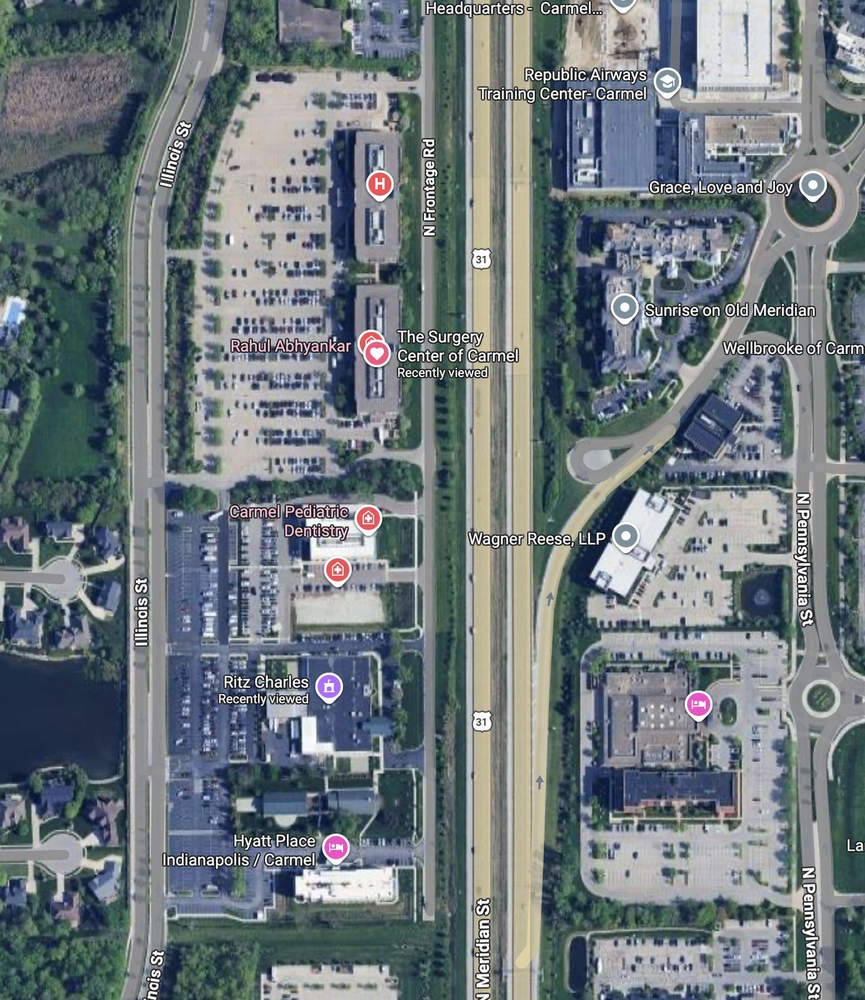
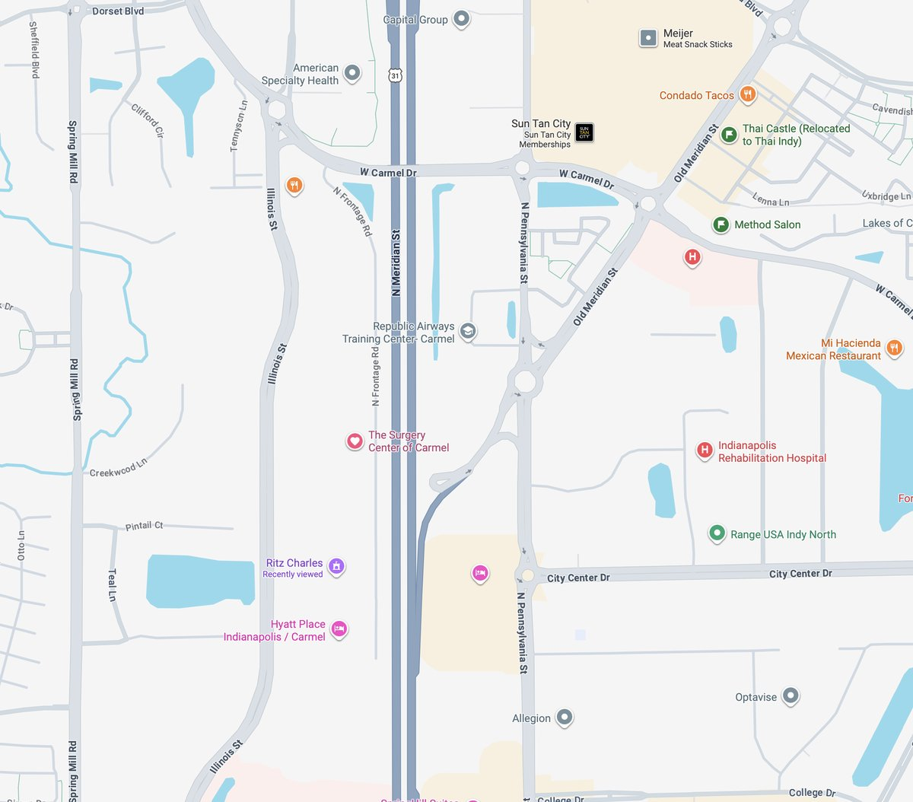

Surgery Center of Carmel
Directions

The Surgery Center of Carmel is in the North Meridian Medical Pavilion — second building from the south on Illinois St., about ½ mile past IU North Hospital.

Exit US-31 at 116th St., take the roundabout onto Illinois St., go past IU North Hospital, then turn right into North Meridian Medical Pavilion.
Take US-31 / Meridian St. southbound. Take first RIGHT on 116th St. (IU North Hospital is on the NW corner.) Take first RIGHT in the roundabout onto Illinois St. Go past IU North Hospital approximately ½ mile and turn RIGHT into North Meridian Medical Pavilion. Surgery Center is in the building on the right (12188-A, Suite 150).
Take US-31 / Meridian St. northbound. Take first LEFT on 116th St. (IU North Hospital is on the NW corner.) Take first RIGHT in the roundabout onto Illinois St. Go past IU North Hospital approximately ½ mile and turn RIGHT into North Meridian Medical Pavilion. Surgery Center is in the building on the right (12188-A, Suite 150).
Take I-465 to Exit 31 / US-31N / Meridian St. northbound. Take first LEFT on 116th St. (IU North Hospital is on the NW corner.) Take first RIGHT in the roundabout onto Illinois St. Go past IU North Hospital approximately ½ mile and turn RIGHT into North Meridian Medical Pavilion. Surgery Center is in the building on the right (12188-A, Suite 150).
If you get lost or are running late, call the Surgery Center directly: (317) 569-8250. For other questions about your child's procedure, call our office at (317) 338-9450.